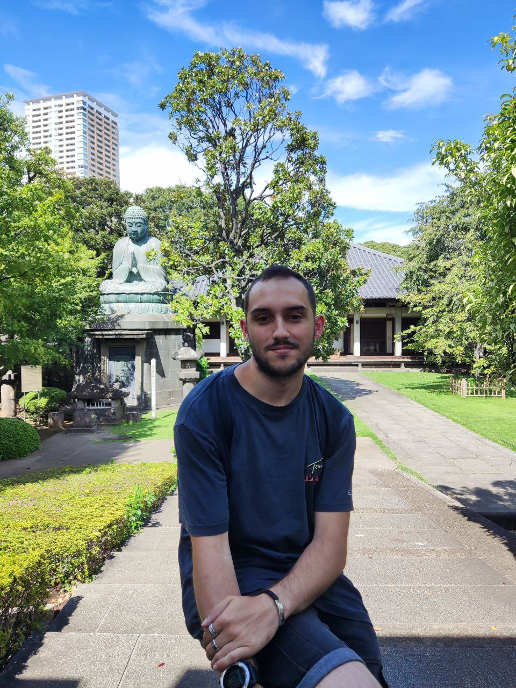
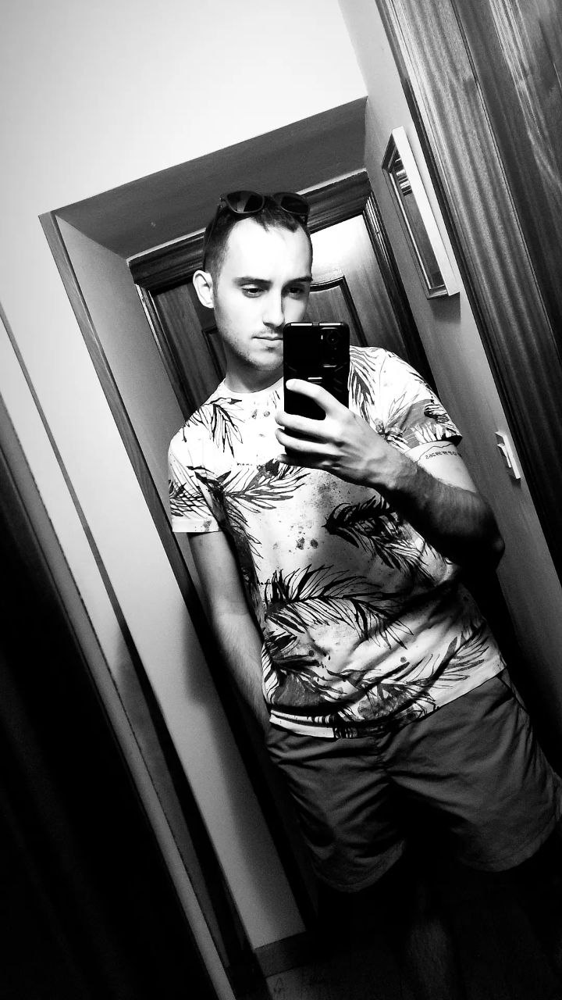
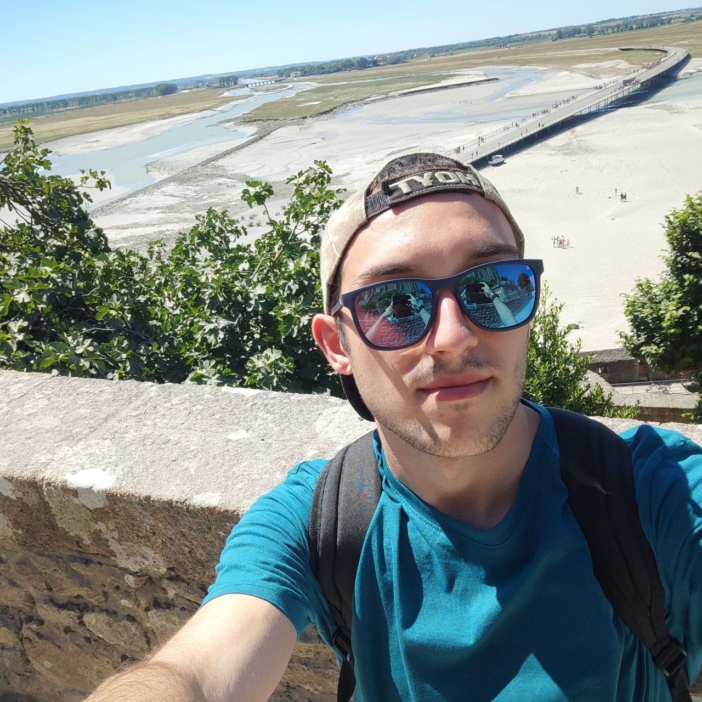
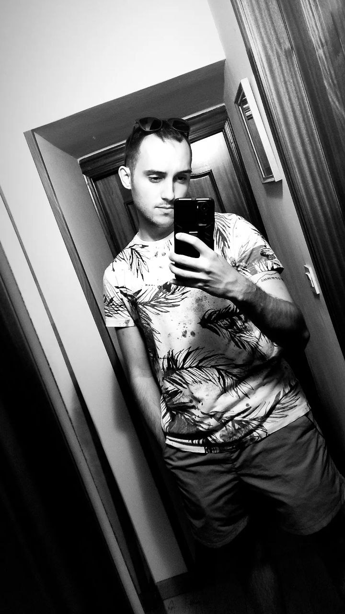
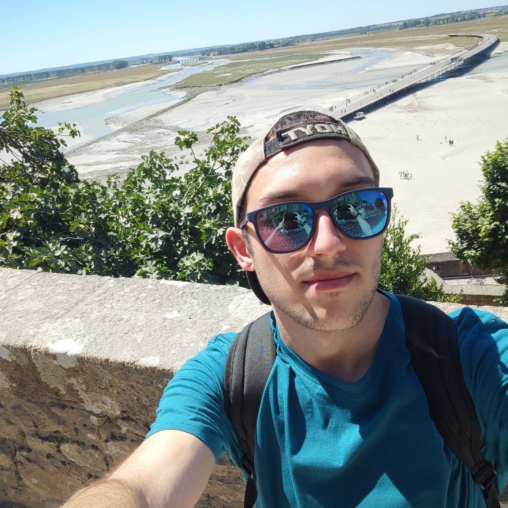

Datos personales
| Nombre | Eloy Alfredo |
| Apellidos | Schmidt Rodriguez |
| Fecha de Nacimiento | 09/11/2000 |
| Lugar de Nacimiento | Oviedo |
| Nombre | Eloy Alfredo |
| Apellidos | Schmidt Rodriguez |
| Fecha de Nacimiento | 09/11/2000 |
| Lugar de Nacimiento | Oviedo |
Nacido en el año 2000 de padre Suizo y madre Española, toda mi vida he vivido en Asturias moviendome entre los concejos de Caso y Langreo. Me considero una persona sencilla, un poco desordenado y alocado, pero siempre fiel a mis principios y a los que quiero y tengo a mi lado. Actualmente estudiante del Master de Ingeniería Web de la Universidad de Oviedo y trabajador como Ingeniero FullStack para BABEL Sistemas de Información.
Amante de la naturaleza y los animales. Soy una persona extrovertida y positiva incluso en las peores situaciones. Me gustan los planes tranquilos con mis amigos y quedarme en casa viendo una pelicula, anime o serie en la cama. Tambien a veces me gusta salir de fiesta pero eso suele ser en ocasiones contadas debido a los estudios y el trabajo que ocupan la mayor parte de mi tiempo durante el curso academico.
 


